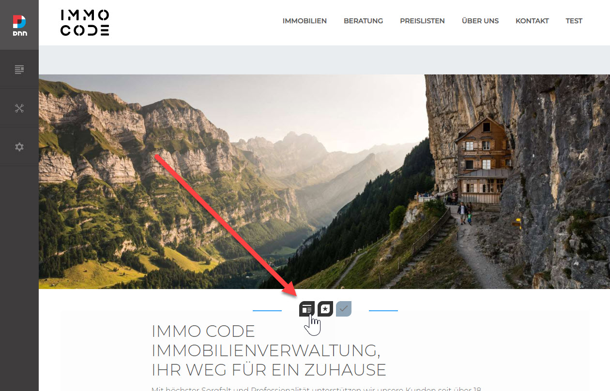
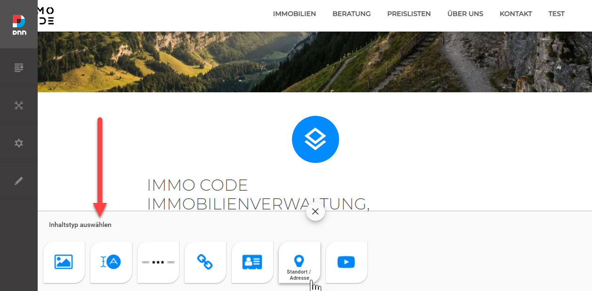
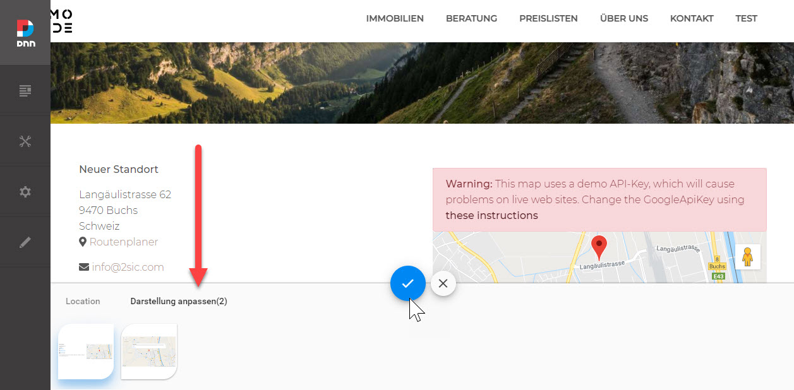

The Content App
The Content-App is a special App in each Site which is automatically created whenever you start using 2sxc on a site. The core purpose is content-editing like adding text, images, links and simple decorations (like separation lines) to the page.
Tip
The content App has some special behavior and limitations by design.
Special Behavior of The Content App
When adding the Content-App to a page, the dialog which appears will ask the editor to choose the Content-Type (like Image) and then how to show it (like Full-Size). This is different from all other Apps where the editor will first choose the App (like Blog), and then the functionality (like Tag-Cloud).
The Content App is quickly added as another module:
It will first show the Content Type picker:
...and then the View to use for this Content-Type.
Pre-Built Content Templates
The Content App can auto-install prepared templates which are specifically designed for this use case. This is why the installer looks different for The Content App than for normal Apps.
Tip
Instead of installing the default set of Content-Types and Views, you can also skip this and just configure your own or import your preferred default Content-App.
Use this ✅ checklist to create a custom template app
Use this ✅ checklist to import the custom app
Special Limitations of The Content App
Since the Content-App is always there by default and the purpose is to add/edit simple content, it's limited by design to not have some functionality other Apps have. This is mainly to protect the developer from building solutions with a bad user experience, since anything complex should be self-contained in it's own App. The limitations are:
- No VisualQuery
- Now Custom Web APIs
Technical Details
- Each Site/Portal has an own Content App
- The ID of the Content-App is
Contentwhile other Apps have a GUID as the ID
Learn More
- The App Folder Structure
- App Icons
- Bundling / Optimizing assets
- ✅ How to reset the content-app to factory defaults
History
- Introduced in 2sxc 1.0
- Enhanced to have multi-language App Resources and Settings 2sxc v11
- Extended to contain Settings and Resources which apply to the whole site in v12.04
- Massively enhanced to be Hybrid (Dnn/Oqtane) and follow best practices in 12.05
- Dropped support for site-wide settings as it's moved to the Primary App in v13.0